← Índice de los 69 tutes de IDA
Tute 53 · IRP e IOCTL
se conecta con: Fuera de alcance
INTRODUCCION AL REVERSING CON IDA PRO DESDE CERO PARTE 53 KERNEL
IRP
Un detalle que quería aclarar que en la parte anterior no hallamos, ya que la definición de la estructura IRP no está completa era como llegar a reversear hasta que aparezca el IOCTL code.
Si vuelvo a debuggear y cuando paro uso la barra de windbg para ver la estructura, sabemos que el comando dt nos muestra la estructura es este caso la estructura _IRP.
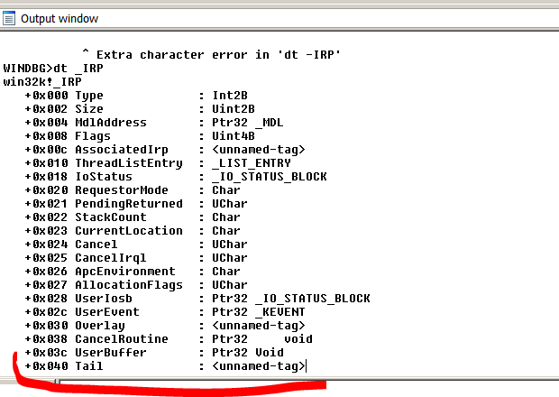
Igual no nos muestra la posición 0x60 que es la que lee y está dentro de Tail, lo mismo que nos pasa en la estructura del IDA, pero acá hay un truquito que sirve para aclarar un poco más las cosas.
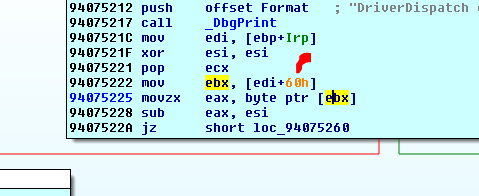
Hay varios modificadores del comando dt uno es -v que lo pone en modo verbose otro es -r que nos da la profundidad de las sub-estructuras para que nos muestre las mismas, veamos que pasa si ponemos.
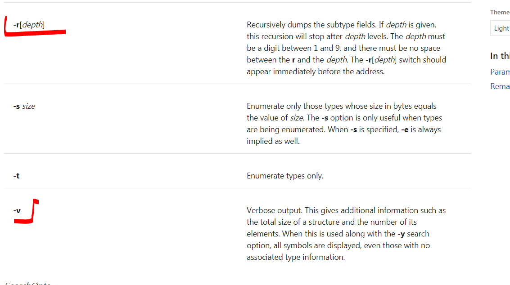
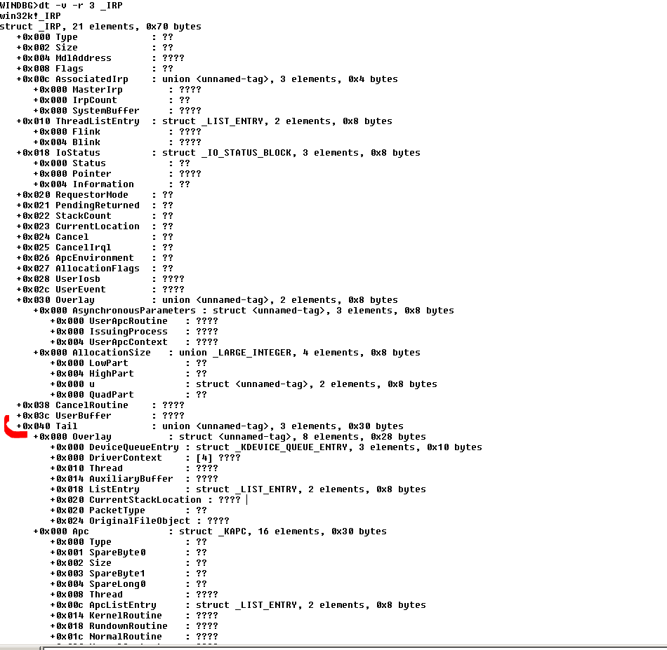
Ahora se ve mejor incluso nos muestra el contenido de Tail
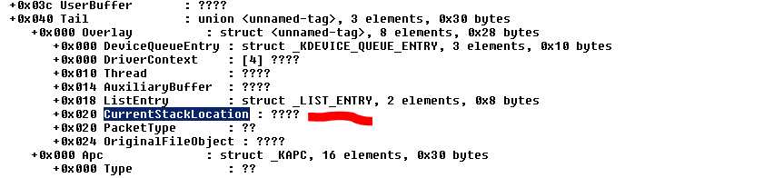
IOCURRENTSTACKLOCATION
Vemos que Tail empieza en 0x40 y 0x20 más adelante esta CurrentStackLocation, que seria la estructura que se encuentra en 0x60
Si uno busca por el WDK si lo tiene instalado
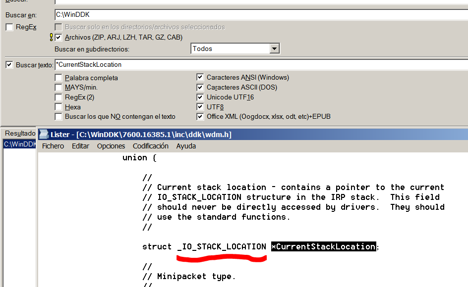
Ve la definición de CurrentStackLocation que es una estructura del tipo _IO_STACK_LOCATION veamos si esta nos la dumpea el windbg.
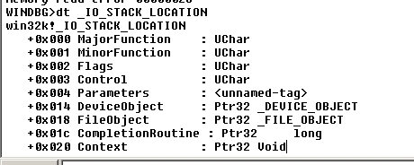
Algo mas obtuvimos pero aun no sale el campo 0x0c que esta dentro de Parameters, también buscamos que nos muestre la estructura con mas profundidad asi que usaremos los modificadores nuevamente.
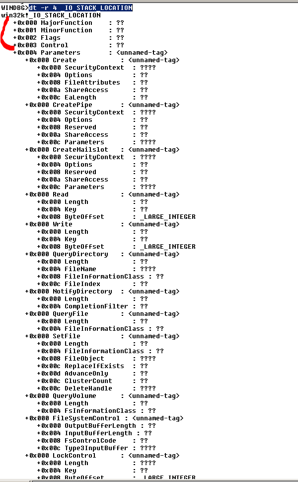
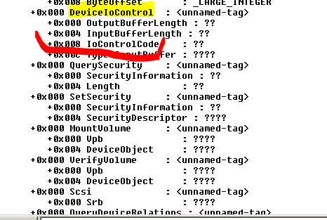
Vemos que los campos a partir del offset 0x4 cambian según la acción que estemos ejecutando, para cada acción hay una definición diferente de estos campos.
Como en nuestro caso buscamos el IOCTL code ese solo se usa la segunda vez que para cuando llamamos a DeviceIoControl, asi que podemos mirar alli y ver que el campo 0x8 dentro de Parameters, para ese caso es el IOCTL, si miramos desde el inicio de la estructura _IO_STACK_LOCATION sera el campo 0xC ya que había 0x4 bytes antes de Parameters.
Si buscamos en el WDK la definición de la estructura
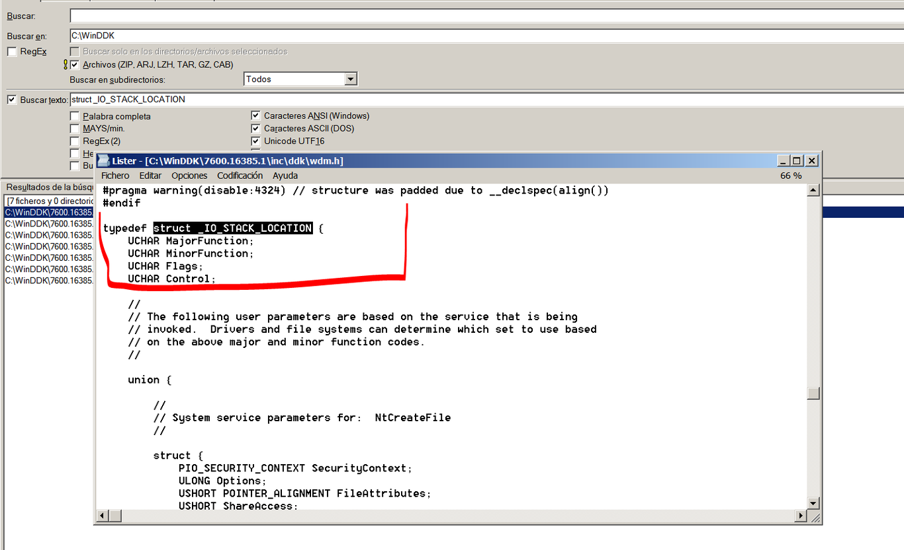
Vemos que al igual que nos sale en el Windbg la primera parte es fija pero después cuando dice unión significa que la parte siguiente es variable y depende del código que estamos trabajando, hay diferentes valores según se este llamando desde CreatefIle, ReadFile, etc lo que nos importa a nosotros es cuando se llama desde DeviceIoControl ya que es la api que se usa para pasar los IOCTL.
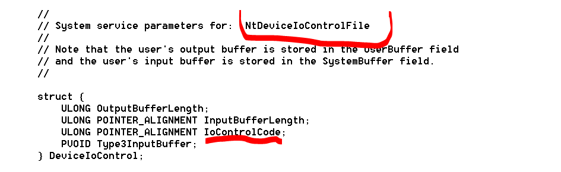
Ahí está, así que como el tipo ULONG es de 4 bytes de largo vemos entonces que si lo completamos.
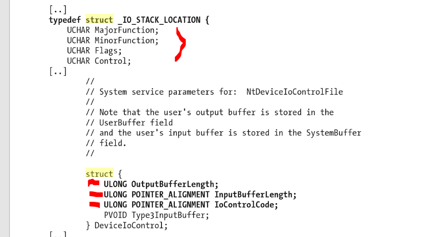
Los primeros son 4 UCHAR o sea de un byte cada uno quiere decir que la estructura Parameters empezaba en 0x4 eso nos decía el windbg
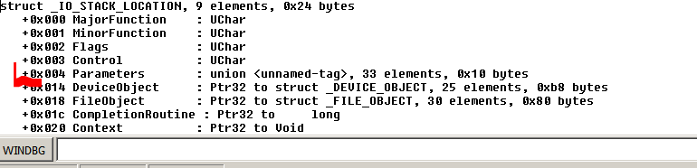
Y luego allí en 0x4 desde el inicio de _IO_STACK_LOCATION estará el primer campo de la misma OutputBufferLenght , en 0x8 estará InputBufferLenght y en 0xC estará el IOCTL o IOControlCode.
Lo cual coincide con el reversing ya que si en IRP + 0x60 empezaba la estructura _IO_STACK_LOCATION, esa se lee aquí.
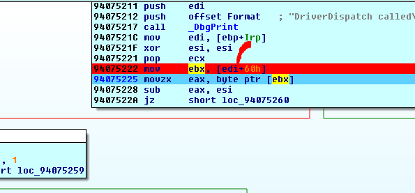
Quiere decir que en EBX tenemos la dirección de _IO_STACK_LOCATION, asi que como eso existe en LOCAL TYPES en IDA la sincronizamos y en EBX apretamos T y la elegimos.
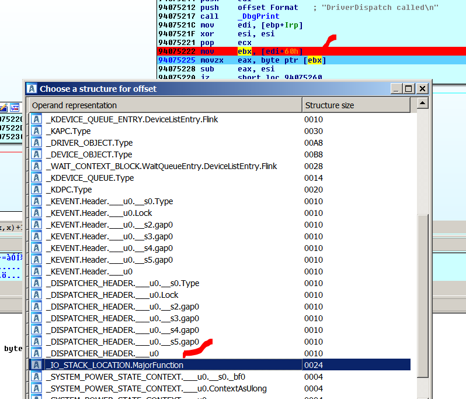
Alli este lee a EAX el valor MajorFunction ya que lee solo un byte y es ese campo.
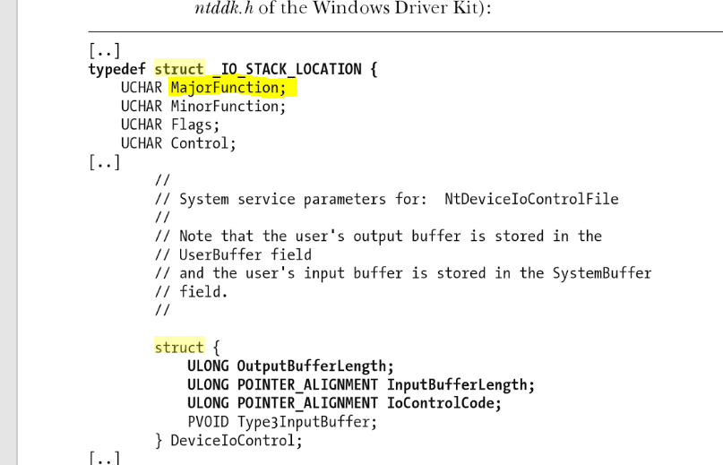
MAJOR FUNCTION TABLE
Recordemos que era el valor que salía de la tablita
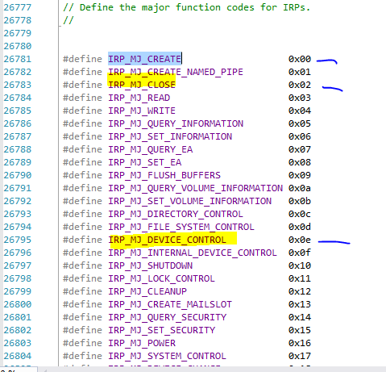
La primera vez cuando hago CreateFile valdrá 0x0, la segunda vez cuando uso DeviceIoControl valdrá 0xE y la tercera vez cuando uso CloseHandle valdrá 0x02.
Por supuesto como es la primera vez que para, cuando hace CreateFile, EAX valdrá cero
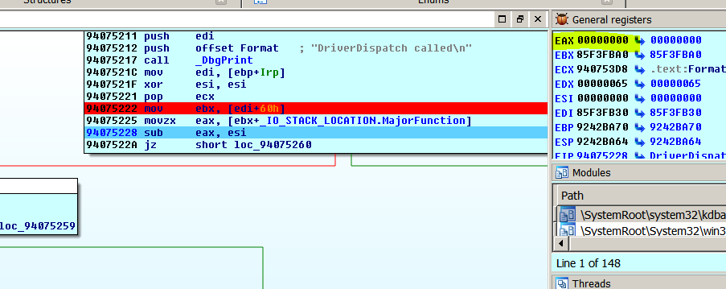
Seguiré hasta que pare nuevamente en la misma dirección.
Ahora si MajorFuncion es 0xe.
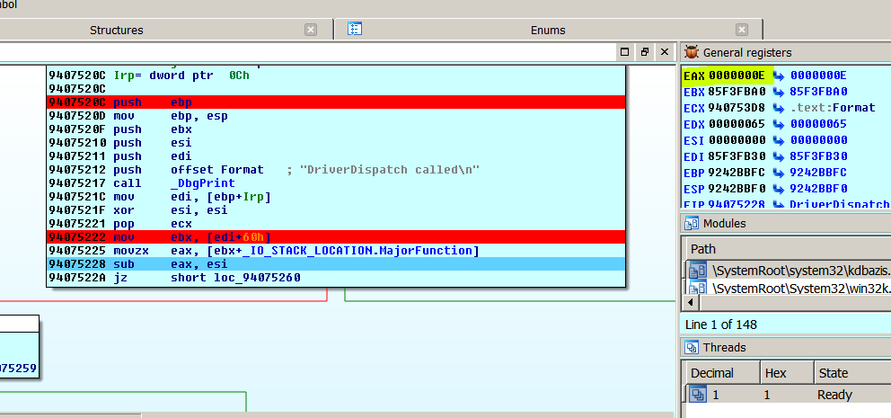
Vemos que en la posición 0xC que va a leer el IOCTL si apreto T
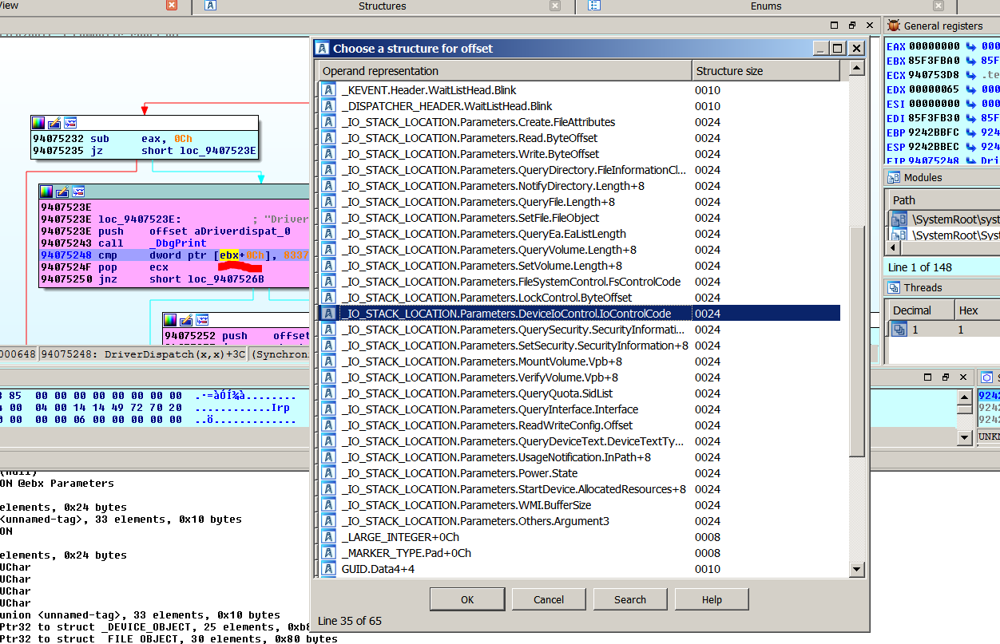
Me salen varias opciones y si veo hay para Create, Read, etc busco la de DeviceIoControl y el campo es IoControlCode.
Y ahora si me queda perfectamente reverseado y coincide ya que solo pasara por alli cuando sea el MajorFunction 0xE, y como en los otros valores de MajorFuncion no pasa por acá, no habrá ningún error.
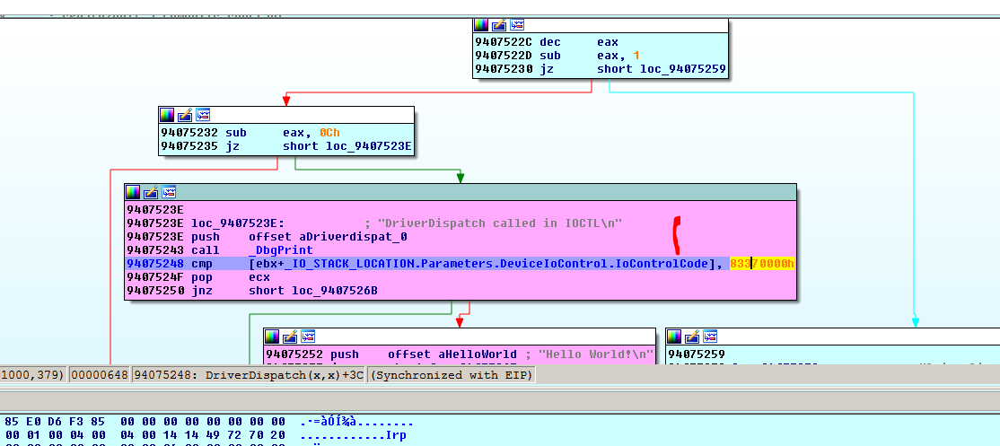
Si en otra parte del programa lee ese mismo campo 0xc cuando utiliza otra MajorFunction en ese caso al apretar T elegiremos la acción correspondiente y el reversing nos quedara de acuerdo a cada caso como corresponde.
Hasta la parte 54
Ricardo Narvaja